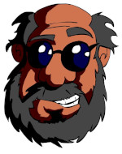

Olha eu aqui!
- 
Meu nome é Jorge Oliveira, tenho 56 anos, paulistano com uma alma soteropolitana. Sou desenhista desde meus 8 anos, designer grafico desde meus 20 anos. Comecei a me considerar um escritor aos 35 anos. Peguei todo o conteudo que a vida me
deu e agora tranformo em codigo. Minha frase favorita é do escritor Irlandes, Oscar Wilde:
"Viver é a coisa mais difícil do mundo. A maioria das pessoas existem"